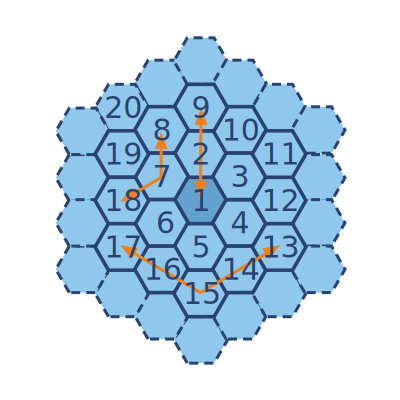

Bees are very well organized insects. Let’s suppose that bees have numerical ordering system for their honeycomb. If each cell in the honeycomb is hexagon and the bees want to build an accurate honeycomb then one method the could use to build it is to build in a spiraling pattern. This would mean that the numerical order is also in a spiral. That way each cell has own number and we have navigation system on the honeycomb. For this mission, we will need to account for that information while we define the distance between specific cells.
The map of the honeycomb consists of a collection of hexagonal elements. The first element in the center is marked as 1 and in a continuing clockwise spiral, the rest of the elements are marked in ascending order ad infinitum. On this map, you can “move” through the adjoining edges of the hexagonal elements to place yourself in a neighboring cell.
For example: the distance between elements 1 and 9 is two moves and the distance between 8 and 18 is two move. Between 17 and 13 - 4 moves.
Input: Pair of numbers that represent 2 elements as integers.
Output: The distance between the 2 elements as an integer.
Precondition:
all(0 < x < 1000 for x in args)
Solution:
# return amount of cells when there are i layers
def f(i):
return 3*i*(i+1) + 1
# return layer # and index in the layer if count clockwisely from 1,7,19,37
def get_coordinate(n):
if n==1: return 0,0
i = 1
while n > f(i):
i += 1
return i, (n-f(i-1))%(6*i)
# return cells which 1 cell away from (i,j)
def get_neighbor((i,j)):
if i==0: return set([(1,i) for i in range(6)])
cmap = lambda x,y: (j/i*(i+x)+j%i+y)%(6*(i+x))
if i==1:
return set([(0, 0), (i, j-1), (i, j+1),
(i+1, cmap(1,0)), (i+1, cmap(1,-1)), (i+1, cmap(1,1))])
elif j%i:
return set([(i, j-1), (i, j+1),
(i+1, cmap(1,0)), (i+1, cmap(1,1)),
(i-1, cmap(-1,0)), (i-1, cmap(-1,-1))])
else:
return set([(i-1, cmap(-1,0)), (i, j-1), (i, j+1),
(i+1, cmap(1,0)), (i+1, cmap(1,-1)), (i+1, cmap(1,1))])
# brute-force search to get the distance
def hex_spiral(*args):
first, second = map(get_coordinate, args)
d, visited, to_search = 0, set([]), {first,}
while second not in to_search:
temp = set([])
for p in to_search:
visited.add(p)
temp = temp.union(get_neighbor(p))
to_search = temp
d += 1
return d